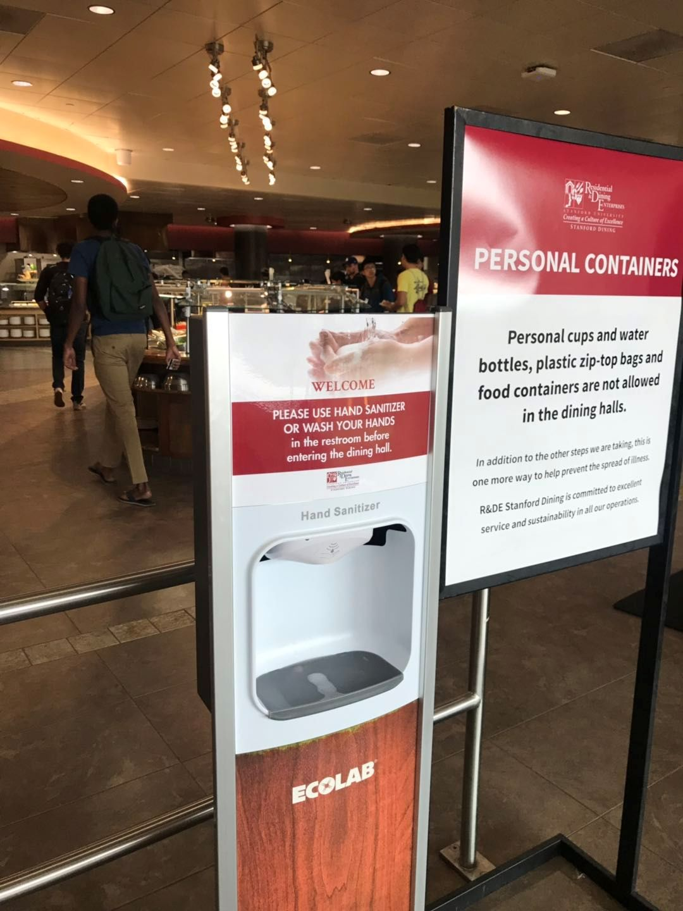
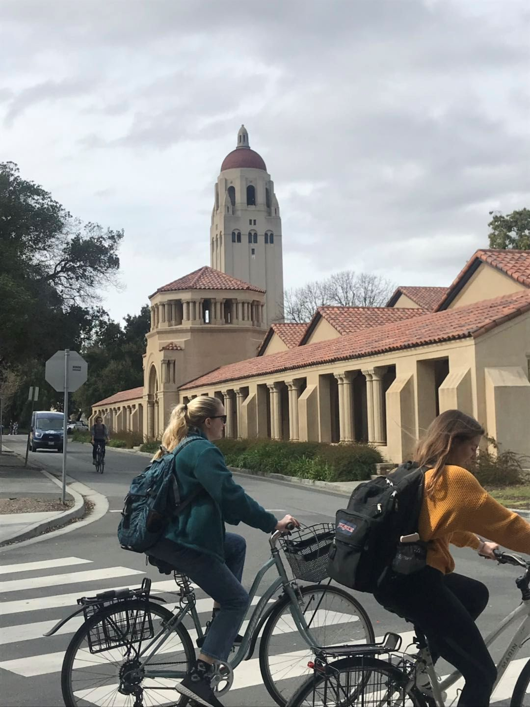
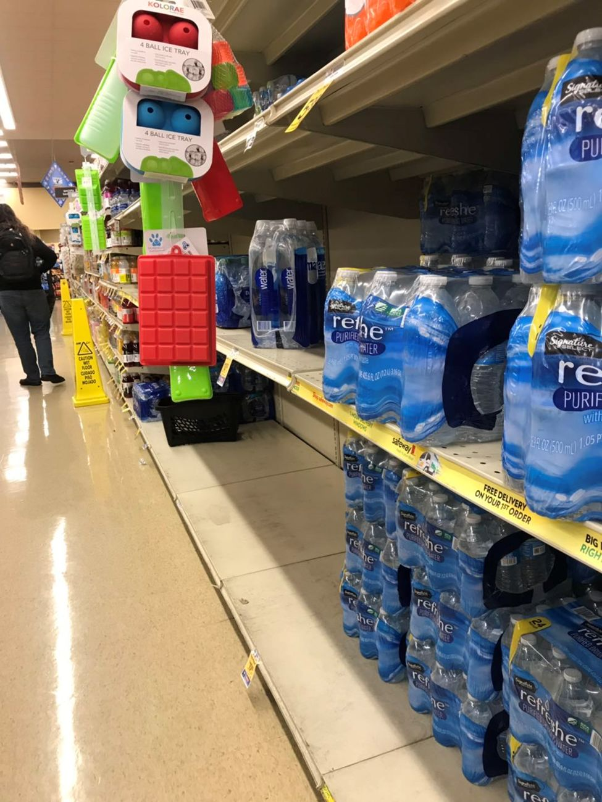
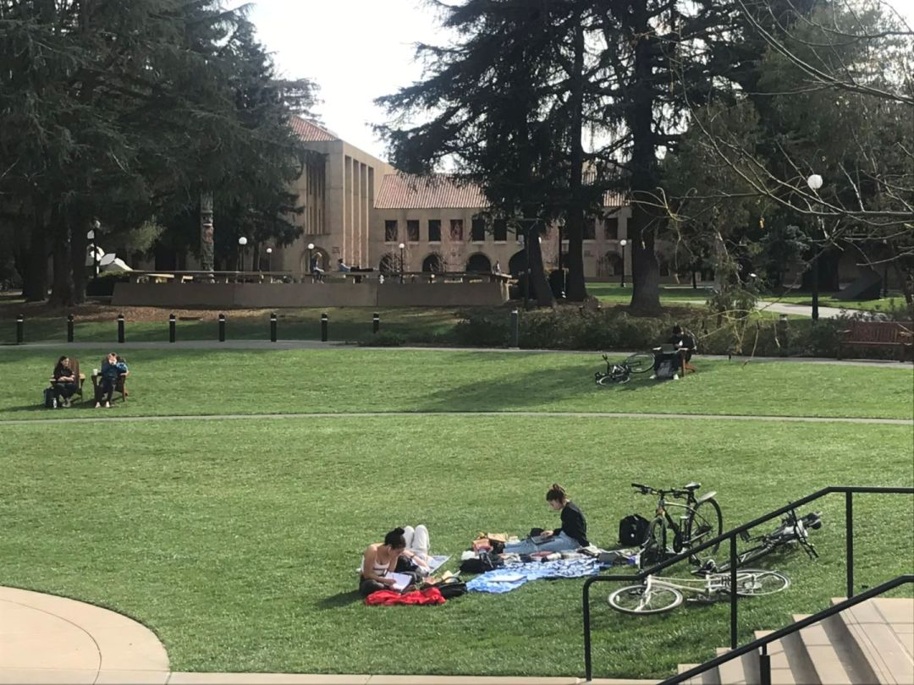

数说疫情0306：湖北非武汉地区首次零新增，美国感染数可能被低估
原文链接 备份链接 境外累计确诊病例即将超过2万。美国很可能有上千例潜在感染病例以及他们的密切接触者未能被及时发现和隔离，到目前为止，“我们看到的美国官方病例数字可能只是冰山一角”。 文 |《财经》数据研究员徐进 图 |《财经》 …
现在校园里还没有人戴口罩，但国内的亲人总是打电话说美国疫情严重，出门一定要戴口罩，这让他非常为难。
文｜李 莹
今年春节，我到美国旅游，结果因为新冠肺炎疫情，回程航班被取消了……一言难尽。这是我滞留美国的第42天，西雅图已经有学校因新冠疫情停课。我去斯坦福大学体验了一天，看看校园内是否受到新冠疫情的冲击。

斯坦福大学是世界著名私立研究型大学，与哈佛大学、麻省理工学院齐名，占地面积在美排名第六，光校内班车线路就有5条以上，优秀学子更是遍布世界500强公司。校园中学生们基本以自行车代步，来往于各个学院。
午间，我来到学生食堂，见各层楼梯处已经放置了泡沫消毒液，观察了一下使用率约50%。

一楼公众区域里不乏亚洲面孔，没想到在外国这么容易辨认，因为在这个平均气温约12度的季节，美国人基本长短T，而亚洲面孔的人会穿超薄羽绒服。

学工程技术专业的中国留学生胡同学表示，现在校园里还没有人戴口罩，但国内的亲人总是打电话说美国疫情严重，出门一定要戴口罩，这让他非常为难。因为在美国人的传统观念里，通常只有病人才戴口罩。如果你外出戴着口罩，就像是向路人宣告我正在生病，而生了病还要出门转悠，那意味着传播疾病的风险，这样的人会被别人致“侧目礼”。
美国疾病控制与预防中心（CDC）始终建议，没有染病的人无需戴口罩。然而，中国的抗疫经验，感染病毒的人在潜伏期也是可能传染的，而且还可能会出现无症状的感染者，所以我们中国人认为大传染时期要求民众在公共场所戴口罩，是利大于弊的。
胡同学说，虽然在校内不必戴口罩，但还是想买一些口罩以防万一。可近一周来，美国口罩价格飞涨，3M的N95口罩价格涨了6-10倍，而一盒50片装一次性医用口罩价格涨了近15倍，还奇货可居，同学们笑谈只能去跟油漆店搞好关系，预订平价N95口罩了。

急救用品、卫生用品销量猛增
前两天还听到一个故事，某银行华裔雇员接待了春节到美的武汉籍客户，第二天她就有点咳嗽症状，吓得她赶紧去斯坦福医院检查。
她告知医生曾接触武汉来客时，医院马上“警铃大作”，医生、护士换上防化服来给她进行一项项检测。“有个管子直接从鼻子插进去真难受啊，但更难受的是我收到了12000元的账单！”虽然后来证明是虚惊一场，保险公司也承担了大部分费用，但这天价账单也显示出美国另一个世纪大难题——医保可能成为控制疫情蔓延的最大绊脚石。
美国有大约10%的人是没有医保的，虽然总统特朗普在周五上午签署了国会通过的紧急抗疫拨款法案，批准拨款83亿美元用于疫情防控，但按副总统彭斯在新闻发布会中所说，“让每个美国人都能接受核酸检测”，一切与新冠肺炎检测相关的费用，将由医保承担。而这10%医保以外的人，他们呢？是否能获得免费检测不得而知。
这部分人很多是没有固定职业，甚至无家可归的，他们的生存环境致使他们染病率更高，还有那些“黑”在美国的人，就更是危险了，他们即使生病也不愿意去医院，这些都有可能成为移动的传染源。

超市里一些饮用水货架被搬空
今天全球的确诊病例已突破10万例，美国的疫情也在蔓延，特别是华盛顿州，现在确诊病例已经有80例，13例死亡，美国华盛顿大学研究新冠病毒疫情的专家Trevor Bedford在接受美国媒体STAT采访时说：“3月1日的西雅图，就是1月1日时的武汉”。
一些美国知名大企业在当地的雇员也被先后确诊：其中亚马逊有一名员工被确诊，微软有两名员工被确诊，脸书一名在其西雅图办公室工作的承包商被确诊……因此，包括亚马逊、谷歌、脸书和微软这些高科技公司在西雅图有办公室的，都已经要求员工在家远程办公。

漫步在美丽的斯坦福大学校园，完全感觉不到疫情对美国学生的影响，普通民众也认为这场疫情可能只是另一场“流感”，究竟是美国人更为“理性”,还是他们心太大，只有时间能证明。


征集令
阳春三月，万物复苏。在抗击疫情的战斗中，我们迎来了春天，《新民周刊》也迎来了新闻线索和故事征集的第二弹。
如今，经历了一个多月休眠的城市正在逐渐苏醒，各行各业都开始有序复工复产。
不论您是企业老板、管理者，还是普通员工；又或者，您是老师、家长，还是学生本人……我们希望了解复工复产复学过程中的困难，或暖心故事。
如果你是抗疫一线的医生护士，疫情期间拍下了珍贵的摄影作品，也欢迎联系我们投稿。
当然，抗击新冠肺炎疫情的相关故事，我们仍然欢迎。
希望广大读者朋友，提供相关线索，说出你的故事，让我们用新闻留存这一切。
《新民周刊》新冠肺炎线索征集值班编辑联系方式（添加时请简要自我介绍）：
周一：应 琛 微信号：paulineying0127
周二：金 姬 微信号：gepetta
周三：黄 祺 微信号：shewen-2020
周四：周 洁 微信号：asyouasyou
周五：孔冰欣 微信号：kbx875055141
周六：吴 雪 微信号：shyshine1105
周日：姜浩峰 微信号：jianggeladandong
✳如你需要捐赠物资，可与以下两位工作人员联系:王勇：WangYong-SH 吴轶君：rommy150708（添加时请注明“捐物资”，方便工作人员快速通过您的申请，谢谢。）
新闻是历史的底稿，你们是历史的见证者。期待你的故事、你的线索！

▼
大家还都在看这些
▼
新民周刊所有平台稿件， 未经正式授权
一律不得转载、出版、改编或进行
与新民周刊版权相关的其他行为，违者必究


原文链接 备份链接 境外累计确诊病例即将超过2万。美国很可能有上千例潜在感染病例以及他们的密切接触者未能被及时发现和隔离，到目前为止，“我们看到的美国官方病例数字可能只是冰山一角”。 文 |《财经》数据研究员徐进 图 |《财经》 …
原文链接 备份链接 CDC表示一天能做的测试只有100个，有些力不从心。 文、图 | 李 莹 今天（3月2日）是我滞留在美第38天#详见《口述实录 | 我大年夜出发去美国自助游，直到现在还被困在旧金山》#，美国已有100例新冠病毒感染肺炎 …
原文链接 备份链接 国内31个省区市新增确诊降至两位数；全球累计确诊病例已破10万大关；意大利疫情最严重地区医疗资源已消耗殆尽 文 |《财经》数据研究员徐进 图 |《财经》视觉中心 编辑 | 郝洲 一、国内疫情防控形势继续向好，局面尽在 …
原文链接 备份链接 随着新冠肺炎疫情在全球范围内扩散，“口罩荒”现象明显增多，不少国家开始禁止口罩出口。 全球多地口罩告急 韩国买口罩实行单双号 随着新冠肺炎疫情加剧，韩国市场上“口罩荒”日益严重。韩国将实施口罩限购措施：按照出生年份的奇 …
原文链接 备份链接 文 | 谢九 在中国的疫情逐渐缓和之际，中国之外的疫情却突然爆发升级。2月25日以来，中国境外新增的确诊病例已经超过了中国境内，新冠肺炎疫情进入全球化的2.0阶段。 目前，韩国的新增确诊人数已经超过了中国，日本、伊朗、 …